Algoritimo Knuth-Morris-Pratt
O que é o Algoritimo Knuth-Morris-Pratt
A busca por strings ou padrões em strings é um problema comum em computação, como encontrar uma frase em um documento ou um trecho de DNA em uma sequência genética. O algoritmo Knuth-Morris-Pratt (KMP) resolve esse problema de forma eficiente, encontrando todas as ocorrências de uma substring dentro de uma string maior.
O KMP é conhecido por sua eficiência em comparação com algoritmos de força bruta, pois evita comparações desnecessárias ao usar informações sobre os padrões já verificados.
Como isso pode ser aplicado na vida real
O algoritmo KMP é amplamente usado para encontrar padrões em textos longos de forma rápida e eficiente. Um exemplo prático é na bioengenharia, onde cientistas buscam sequências específicas de DNA (como genes ou mutações) em cadeias genéticas com milhões de bases.
Um exemplo atual disso é a recriação dos lobos terriveis feita pela empresa Colossal Biosciences, que por meio de uma tecnoligia da bioengenharia aprimorada chamada CRISPR conseguiram realizar este feito.

Esse método consiste basicamente em edição genômica, ou seja, identificação de alguns fragmentos na cadeia de DNA de uma espécie e alteração de um valor possível para outro, como trocar um “A” por um “T” ou um “C” por um “G”. No caso dessa espécie, o DNA de lobos comuns foi alterado com base em um fóssil que estava preservado e somente 14 alterações em 20 genes precisaram ser feitas para que a sequência genética ficasse idêntica ao dos Lobos Terríveis.
Neste caso o algoritmo KMP seria uma potencial ferramenta utilizada para encontrar os padrões de DNA desejados, levando em conta sua eficiente analise de padrẽes em strings grandes, como o DNA.
Algoritimo ingênuo
Antes de estudarmos o algoritmo KMP, vamos entender como funciona o principio de análise de padrões de strings utilizando o algoritmo ingênuo e como o algoritmo KMP resolve o principal problema dele.
Assim como o KMP, o algoritimo ingênuo também é utilizado para procurar padroẽs em strings. Neste caso, o algoritimo ingênuo realiza esta busca utilizando uma método de "brute force", ou seja, ele testa todas as combinações possiveis para encontrar padrões.
Exercício
Com o contexto de como o algoritimo funciona, pense quais argumentos o algoritmo ingênuo deve receber para seu funcionemento:
void algoritimo_ingenuo(???){...}.Gabarito
Como você deve ter imaginado, ele não precisa receber muitas coisas, apenas as 2 strings e seus tamanhos:
void algoritimo_ingênuo(char string[], char substring[], int n, int m){...}
Agora vamos desenvolver mais este código e tentar montar a estrutura do loop principal do algoritimo:
void algoritimo_ingenuo(char string[], char substring[], int n, int m){
for(int i = 0; i < n - m; i++){
// loop para percorrer a string
}
}
Exercício
Completando um pouco mais o código, chegamos dentro do loop de comparação das strings:
void algoritimo_ingenuo(char string[], char substring[], int n, int m){ for(int i = 0; i < n - m; i++){ for (int j = 0; j < m; j++) { //loop de comparação } } }Usando o código fornecido, tente desenvolver o conteúdo deste loop para que ele continue realizando as comparações de caractéres das strings enquanto elas estiverem iguais.
Gabarito
void algoritimo_ingenuo(char string[], char substring[], int n, int m){ for (int i = 0; i <= n - m; i++) { for (int j = 0; j < m; j++) { if (string[i + j] != substring[j]){ break; } } } }
Com a comparação de caractéres feita dentro do loop, apenas precisamos complemetar o codigo para que ele nos devolva os indices onde o padrão foi encontrado:
void algoritimo_ingenuo(char string[], char substring[], int n, int m){
for (int i = 0; i <= n - m; i++) {
for (int j = 0; j < m; j++) {
if (string[i + j] != substring[j]){
break;
}
if (j == m - 1) {
printf("Padrão encontrado na posição %d\n", i);
}
}
}
}
Vamos ver uma simples demonstração de como ele funciona por meio da animação:


Exercício
Agora que estamos familiarizados com o funcionamento deste algoritimo, tente estimar qual vai ser a complexidade dele no seu pior caso.
Gabarito
Como o algoritmo ingênuo compara cada posição da string principal, e em cada posição tenta casar a substring. Se a string principal tem tamanho n e a substring tem tamanho m, a complexidade no pior caso é \(O(nm) \).
Agora vamos tentar com uma string e substring maiores:

 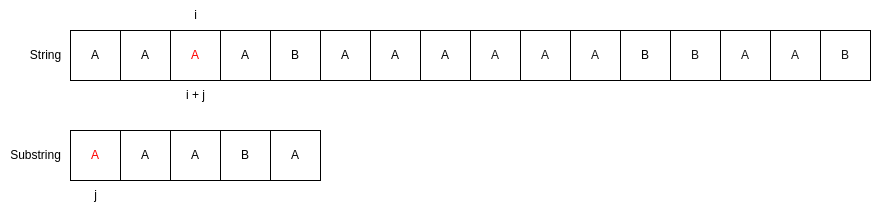
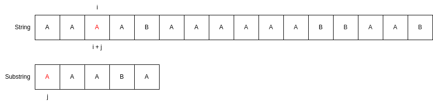 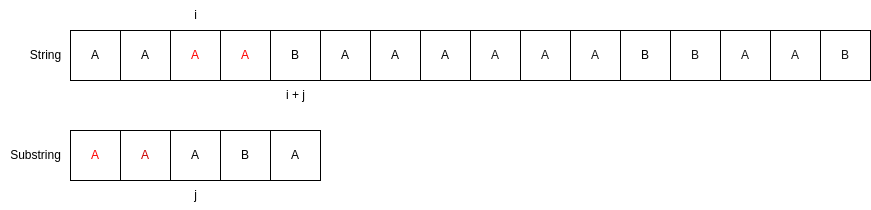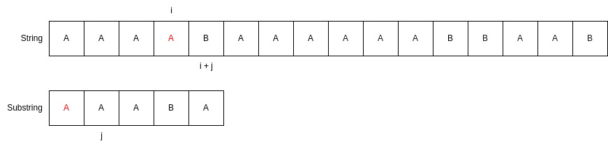
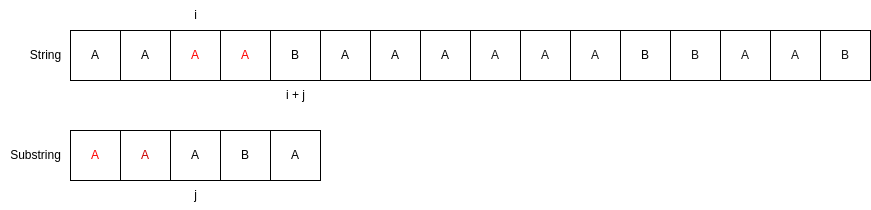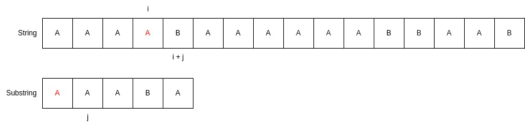
 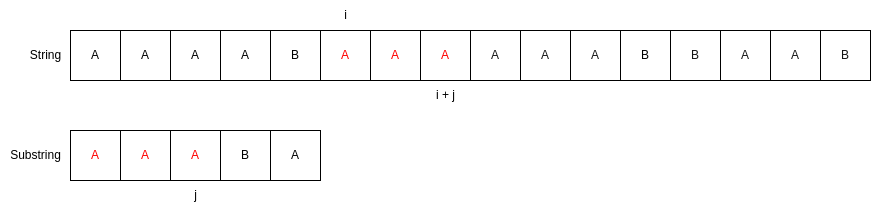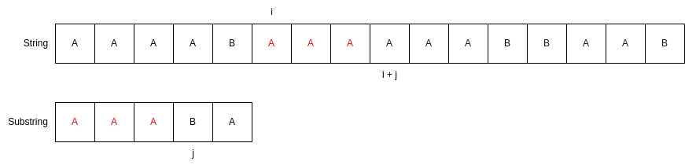
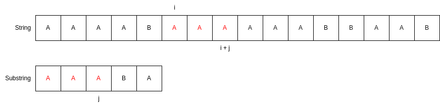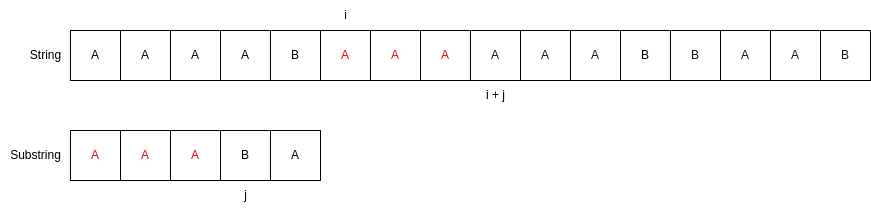 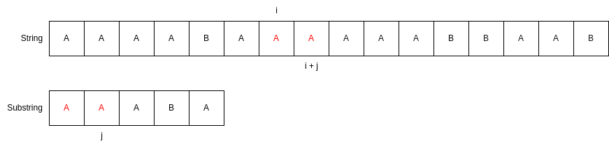
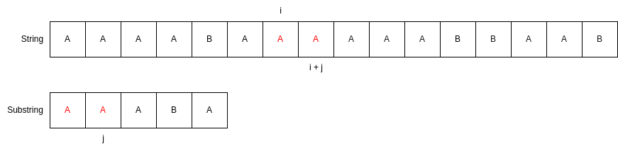 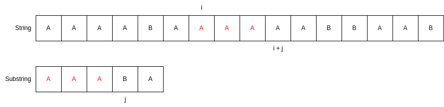
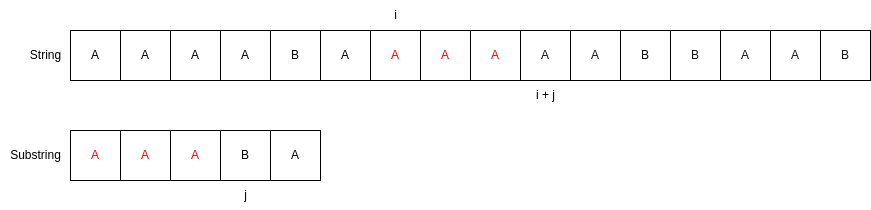 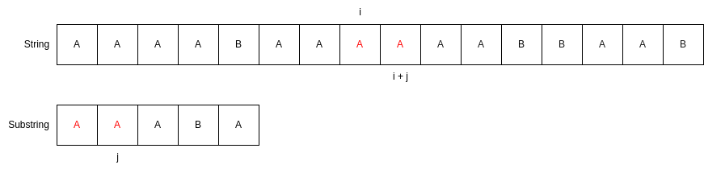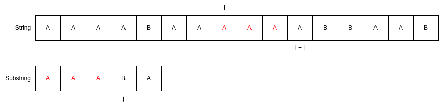
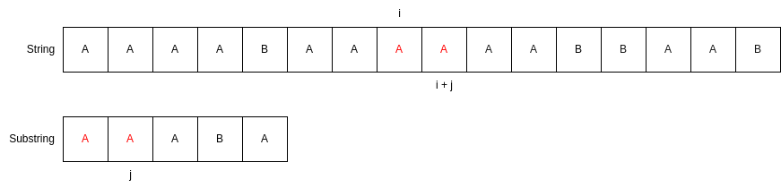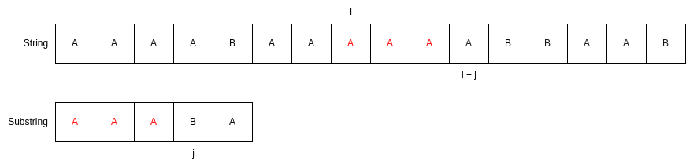 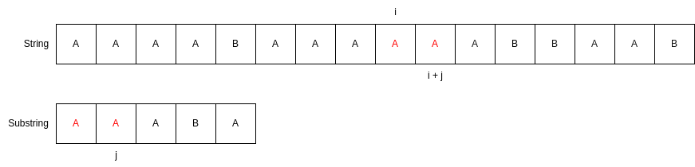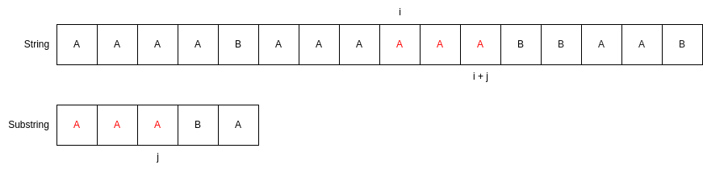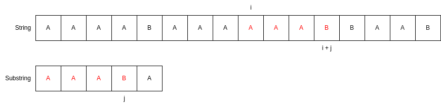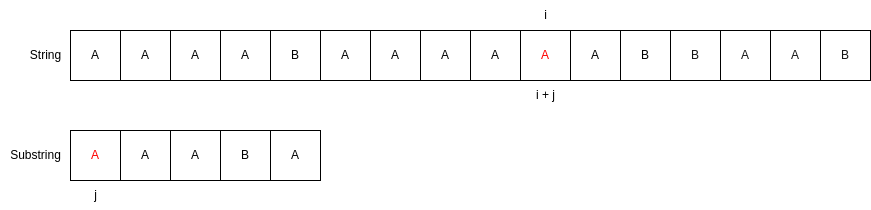
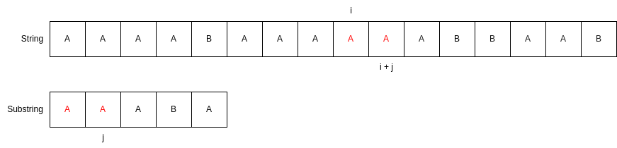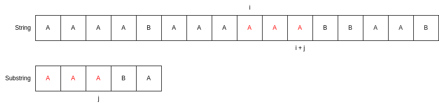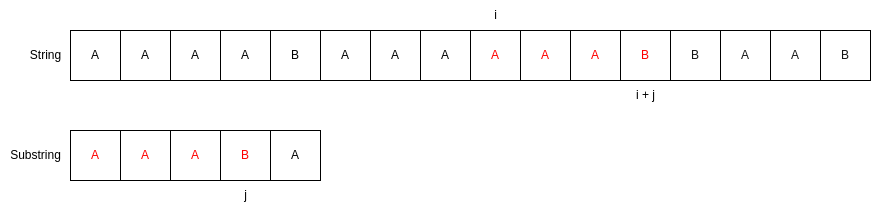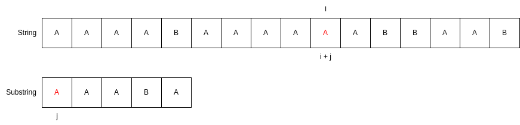


O KMP
Mas como melhorar esse algoritmo ingênuo? A ideia de melhor esse algoritmo (e o nome dele) veio de 3 homens: Donald Knuth, James Morris e Vaughan Pratt, que buscaram otimizar o desperdício de tempo causado por revisitar caracteres já lidos. Em alto nível, o que eles pensaram foi:
void kmp(char string[],int n, char substring[], int m){
enquanto i for menor que n, continue o processamento {
se string[i] for igual a substring[j]{
avance contador i e j
}
se j for igual a m{
sabemos que o padrao foi encontrado porque o tamanho maximo da substring foi atingido
zere j para continuar a busca
}
se i for menor que n e string[i] for diferente de substring[j]{
se j for igual a 0{
avanca i mantendo j em 0
}caso contrario,{
reinicia j, mas mantem o valor de i para nao perder o progresso
}
}
}
}
Exercício
A partir dessa descricao de alto nivel do KMP, tente escrever como seu codigo em C ficaria
void kmp(char string[], int n, char substring[], int m){ ??? }Gabarito
void kmp(char* string, int n, char* substring, int m) { // passo 1: inicialize os indices int i = 0; // indice para o string int j = 0; // indice para a substring // passo 2: inicie um laco na string while (i < n) { // passo 3: compare caracteres if (string[i] == substring[j]) { // passo 4: se coincidem i++; j++; } // passo 5: se o padrao foi encontrado if (j == m) { printf("padrao encontrado na posicao %d\n", i - j); j = 0; // reinicia j para buscar outras ocorrencias } // passo 6: se ha um mismatch else if (i < n && string[i] != substring[j]) { // passo 6a: se j eh zero if (j == 0) { i++; // avanca i, mantendo j em 0 } // passo 6b: Se j eh maior que zero else { j = 0; // reinicia j, mas mantem i } } } }
Essa abordagem é mais eficiente que a busca ingênua, pois evita retroceder no texto, mas ainda realiza comparações redundantes, já que reinicia j para 0 em cada mismatch. Sua complexidade no pior caso pode se aproximar de O(n * m), onde n é o tamanho do texto e m é o tamanho do padrão.